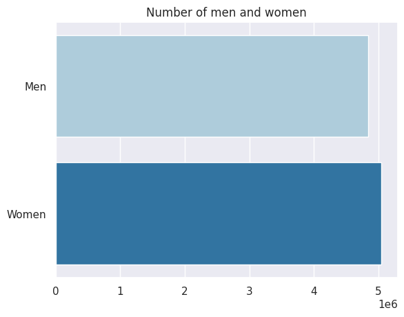
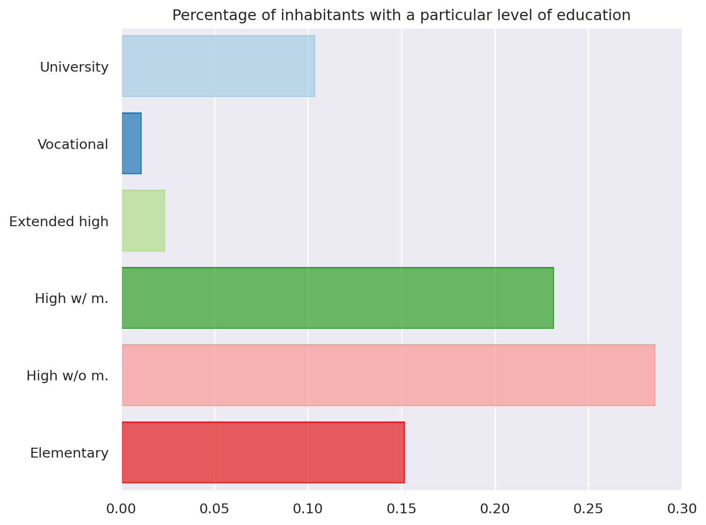
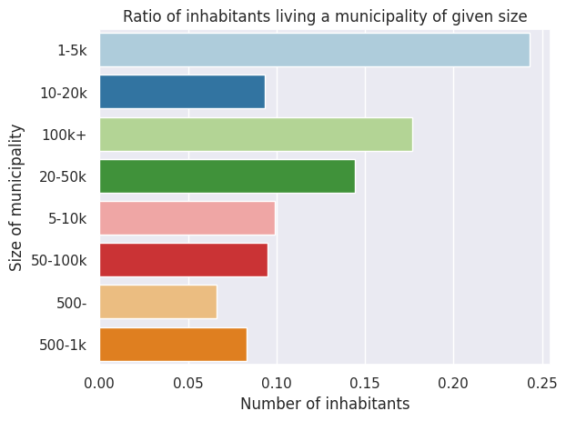
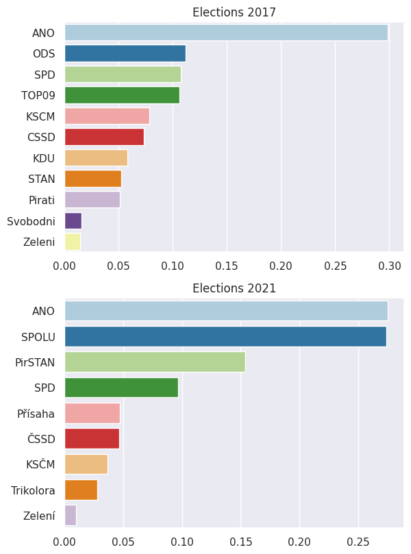
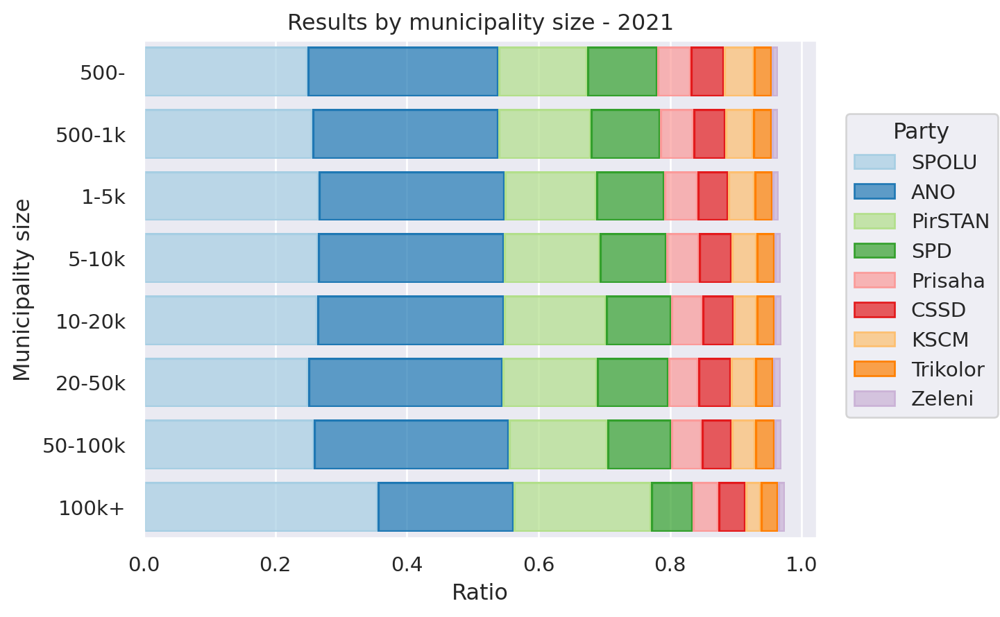
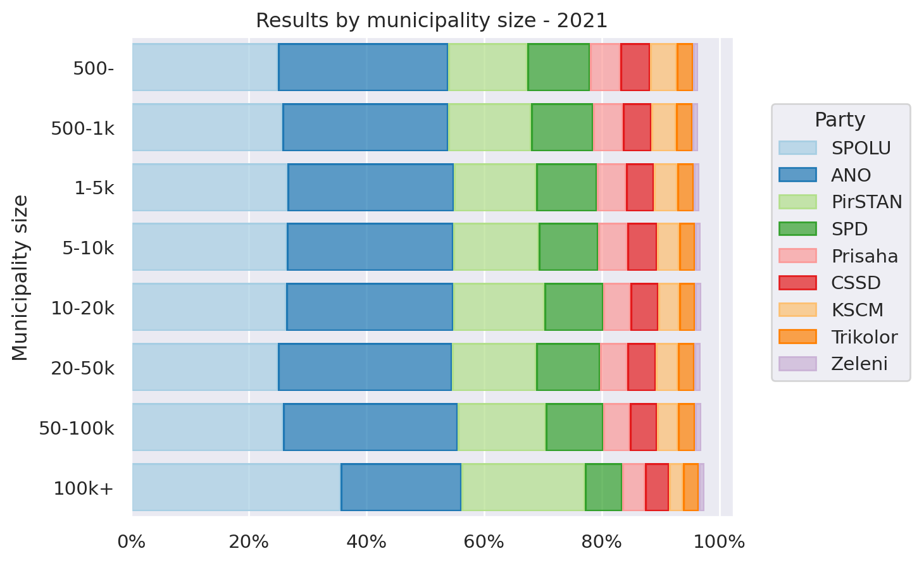
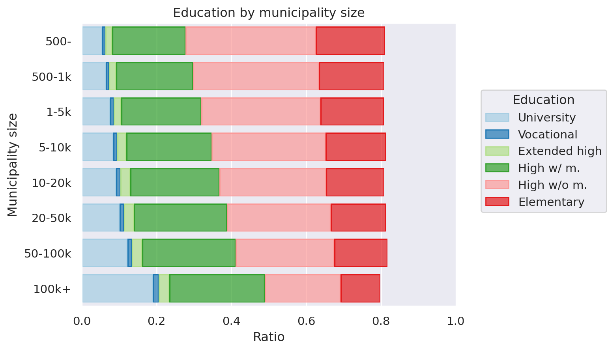
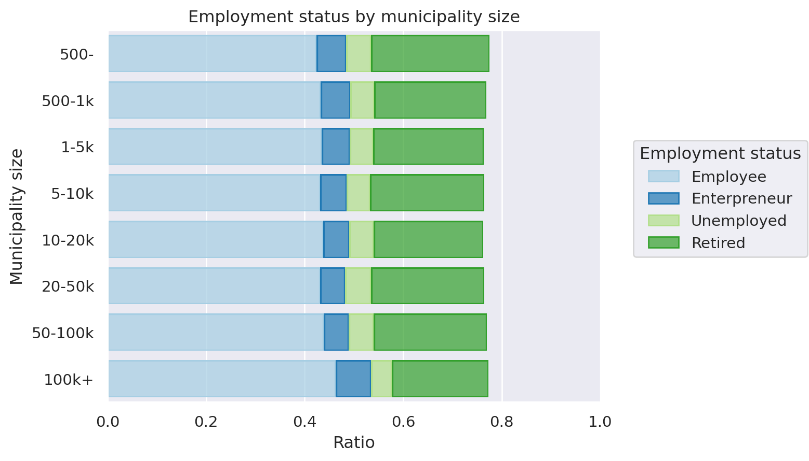
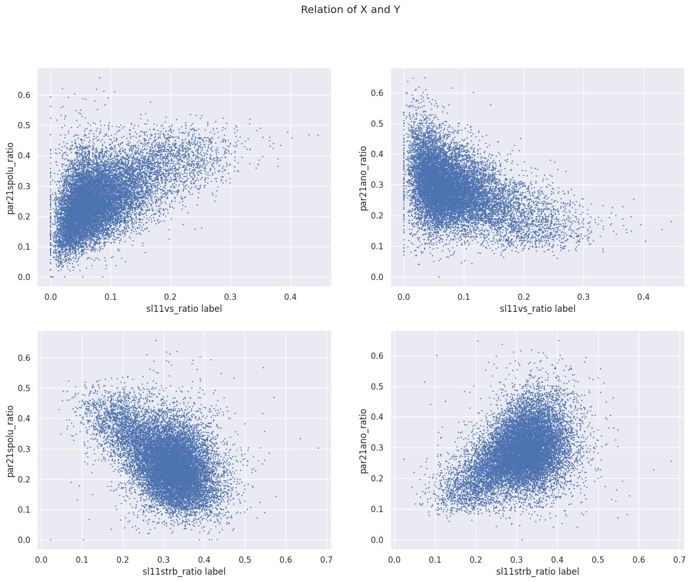

import pandas as pd
import seaborn as sns
import matplotlib.pyplot as plt
sns.set_palette('Paired')
%load_ext autoreload
%autoreload 2The autoreload extension is already loaded. To reload it, use:
%reload_ext autoreloadimport pandas as pd
import seaborn as sns
import matplotlib.pyplot as plt
sns.set_palette('Paired')
%load_ext autoreload
%autoreload 2The autoreload extension is already loaded. To reload it, use:
%reload_ext autoreloadelections = pd.read_csv("./data/volby/volby_sociodemo.csv",sep=";")
elections.shape(14271, 51)elections['obec'] = elections['obec'].astype(object)
elections['sl11zeny'] = elections['sl11obyvatel'] - elections['sl11muzi']duplicate_rows = elections.duplicated().sum()
duplicate_districts = elections['obec_okrsek'].duplicated().sum()
print(f"Duplicated rows: {duplicate_rows}")
print(f"Duplicated districts: {duplicate_districts}")
Duplicated rows: 0
Duplicated districts: 0elections = elections.set_index(elections['obec_okrsek'])def to_ratio(df, col, base):
df[col+'_ratio'] = df[col]/df[base]for col in ['par21vsezn', 'par21spd',
'par21spolu', 'par21pirsta', 'par21ano', 'par21soc', 'par21pri',
'par21ksc', 'par21zel', 'par21tss']:
to_ratio(elections, col, 'par21phcelkem')
for col in ['par17vsezn','par17ano', 'par17ods', 'par17top', 'par17kdu', 'par17spd',
'par17soc', 'par17pir', 'par17sta', 'par17zel', 'par17ksc', 'par17svo']:
to_ratio(elections, col, 'par17phcelkem')
for col in ['sl11muzi', 'sl11rozv', 'sl11deti', 'sl11seni',
'sl11kat', 'sl11rom', 'sl11vs', 'sl11vos', 'sl11nast', 'sl11strm',
'sl11strb', 'sl11zakl', 'sl11zam', 'sl11pod', 'sl11nezam',
'sl11neprduch']:
to_ratio(elections, col, 'sl11obyvatel')elections['vel.obce_cat'] = pd.cut(elections['vel.obce'], [0,500,1000,5000,10000,20000,50000,100000, float("inf")])
translation = {
'(0.0, 500.0]' : '500-',
'(500.0, 1000.0]':'500-1k',
'(1000.0, 5000.0]':'1-5k',
'(5000.0, 10000.0]':'5-10k',
'(10000.0, 20000.0]':'10-20k',
'(20000.0, 50000.0]':'20-50k',
'(50000.0, 100000.0]':'50-100k',
'(100000.0, inf]':'100k+'
}
elections['vel.obce_cat'] = elections['vel.obce_cat'].astype(str).apply(lambda x: translation[x])elections.to_csv("./data/volby/dataset_extended.csv",index=True,sep=";")import scripts
elections_extended = scripts.load_extended_dataset("./data/volby/dataset_extended.csv")
scripts.plot_gender_counts(elections_extended);
scripts.plot_edu_count(elections_extended);
scripts.plot_municipality_size_ratio(elections_extended);
elections_extended.groupby("vel.obce_cat")["sl11obyvatel"].sum()vel.obce_cat
1-5k 2399926
10-20k 923771
100k+ 1744359
20-50k 1428168
5-10k 979599
50-100k 936796
500- 651911
500-1k 819641
Name: sl11obyvatel, dtype: int64
scripts.plot_parl_elections(elections_extended);
elections_extended['vel.obce_cat'].astype("category")obec_okrsek
500011_1 1-5k
500011_2 1-5k
500011_3 1-5k
500020_1 1-5k
500020_2 1-5k
...
599948_4 1-5k
599956_1 1-5k
599964_1 500-1k
599999_1 1-5k
599999_2 1-5k
Name: vel.obce_cat, Length: 14271, dtype: category
Categories (8, object): ['1-5k', '10-20k', '100k+', '20-50k', '5-10k', '50-100k', '500-', '500-1k']scripts.elections2021_size_plot(elections_extended)

scripts.
scripts.box_cross_size_plot(elections_extended,"sl11obyvatel",{
"sl11zam": "Employee",
"sl11pod": "Enterpreneur",
"sl11nezam": "Unemployed",
"sl11neprduch": "Retired",
}).label(
x="Ratio",
y="Municipality size",
title="Employment status by municipality size",
color="Employment status",
).limit(x=(0,1.0)).theme(scripts.object_theme)
xs=["sl11vs_ratio","sl11strb_ratio"]
ys=["par21spolu_ratio","par21ano_ratio"]
scripts.create_jointplot(elections_extended, xs,ys,[[{"x":f"{x} label"} for y in ys] for x in xs]);
sns.axes_style("darkgrid"){'figure.facecolor': 'white',
'axes.labelcolor': '.15',
'xtick.direction': 'out',
'ytick.direction': 'out',
'xtick.color': '.15',
'ytick.color': '.15',
'axes.axisbelow': True,
'grid.linestyle': '-',
'text.color': '.15',
'font.family': ['sans-serif'],
'font.sans-serif': ['Arial',
'DejaVu Sans',
'Liberation Sans',
'Bitstream Vera Sans',
'sans-serif'],
'lines.solid_capstyle': 'round',
'patch.edgecolor': 'w',
'patch.force_edgecolor': True,
'image.cmap': 'rocket',
'xtick.top': False,
'ytick.right': False,
'axes.grid': True,
'axes.facecolor': '#EAEAF2',
'axes.edgecolor': 'white',
'grid.color': 'white',
'axes.spines.left': True,
'axes.spines.bottom': True,
'axes.spines.right': True,
'axes.spines.top': True,
'xtick.bottom': False,
'ytick.left': False}